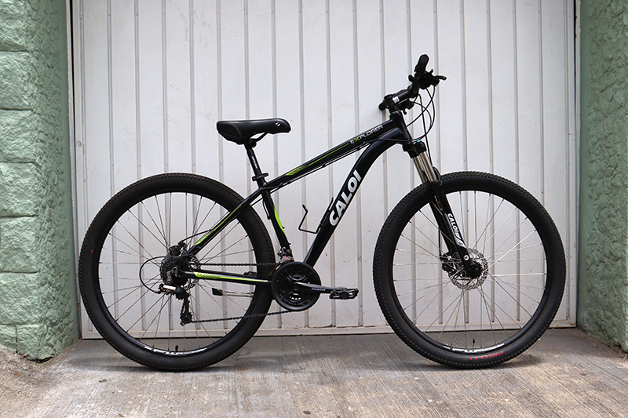
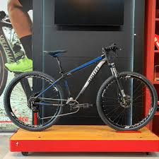
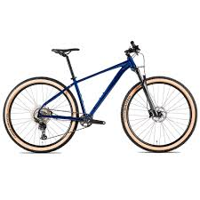
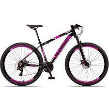

Modelo de Bicicletas

Mountain Bike: A mountain bike é uma bicicleta projetada para enfrentar terrenos acidentados e
trilhas. Ela possui pneus largos e cravados para melhor aderência, além de um sistema de suspensão
para amortecer impactos.

Speed Bike: A speed bike é uma bicicleta de estrada projetada para alta velocidade e longas
distâncias. Ela possui pneus finos e aerodinâmicos, guidão curvo e é leve para melhor desempenho em
estradas pavimentadas.

BMX: A BMX é uma bicicleta projetada para manobras e acrobacias em pistas de terra ou concreto. Ela
é geralmente menor e mais leve do que outras bicicletas, com um quadro resistente e guidão curto
para melhor controle.

Todos os direitos reservados